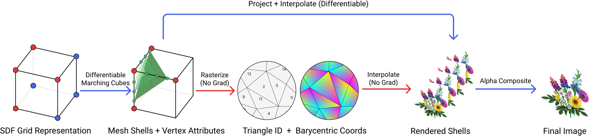
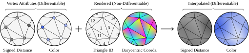
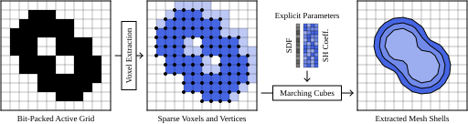

1 Massachusetts Institute of Technology 2 University of Washington 3 Google DeepMind
* Equal contribution; order determined by coin flip.
Differentiable rendering has emerged as a powerful approach for 3D reconstruction and novel view synthesis. Today, state-of-the-art differentiable rendering methods combine a variety of custom representations of 3D geometry and appearance with specialized renderers. However, most downstream tasks in computer graphics rely on 3D meshes, which provide superior portability, allow for hardware-accelerated rendering, and are at the core of most computer graphics workflows. While prior work has attempted differentiable rendering with mesh representations, these approaches are limited to object-centric scenes and fail to reconstruct large-scale, unbounded scenes.
In this work, we introduce Meshtryoshka, a novel mesh differentiable rendering framework that combines an off-the-shelf triangle rasterizer with a 3D representation that consists of nested mesh shells which resemble a matryoshka doll. In every forward pass, the mesh shells are extracted anew from a 3D signed distance function via iso-surface extraction, and the opacities for each vertex are computed as a function of signed distance. Each mesh shell is then rasterized independently, and the final image is created via alpha compositing. Crucially, mesh vertex positions are updated only indirectly via gradients that flow through the opacity values into the signed distance function, and hence, our method is compatible with off-the-shelf mesh renderers that need not be differentiable with respect to vertex positions.
On object-centric scenes, our method performs competitively with surface-based differentiable rendering techniques. To the best of our knowledge, our method is the first differentiable mesh rendering method that scales to unbounded, real-world 3D scenes, where it yields high-quality novel view synthesis results approaching those of state-of-the-art, non-mesh methods. Our method suggests that it may be possible to solve the differentiable rendering problem without relying on specialized renderers, only using conventional tools from the computer graphics toolbox.

We transform a standard non-differentiable triangle rasterizer into an effective triangle-based differentiable renderer via several key ideas. First, we parameterize scenes via cubic grids of signed distances and view-dependent colors. We apply differentiable marching cubes on multiple level sets of the signed distance field, to extract a set of nested mesh shells—a Meshtryoshka—from a scene. Each shell is a mesh whose vertices contain color features interpolated from the grid representation.

We render these shells using a two-step pipeline of rasterization and deferred shading, which allows us to utilize an off-the-shelf rasterizer. A rasterizer computes for each pixel the triangle ID and barycentric coordinates of the first ray-triangle intersection. While this operation is non-differentiable, it can be combined with differentiable image-space interpolation to convert per-triangle-vertex values into differentiable per-pixel values. We perform this process on each mesh shell independently, and then combine the results via alpha compositing, using the signed distance values to compute per-shell opacities. As explained in our paper, this formulation is a close approximation of rendering the shells using ray tracing, allowing for gradient-based optimization.

To scale to real-world scenes, we periodically compute an occupancy mask over the cubic grid, allowing us to only store parameters in occupied parts of space. We implement our differentiable marching cubes to work on a sparse grid. We optimize coarse to fine, starting from a dense grid at low resolution, and periodically subdividing. We divide real-world scenes into foreground and background. The foreground is represented as a normal 3D grid, while the background is represented as a set of six truncated frustums resembling a tesseract in 3D. Each frustum composes of frustum-shaped voxels which grow larger in proportion to the distance from the scene center, ensuring that farther regions are represented more sparsely.
Drag the slider to compare. Left: 3D Gaussian Splatting · Right: Meshtryoshka (Ours)